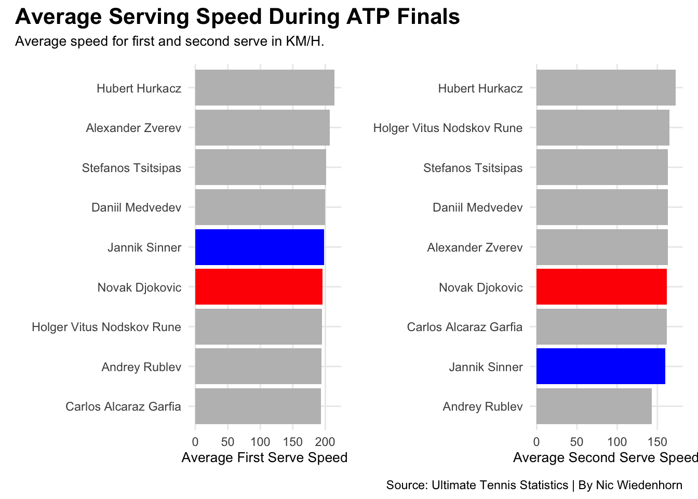
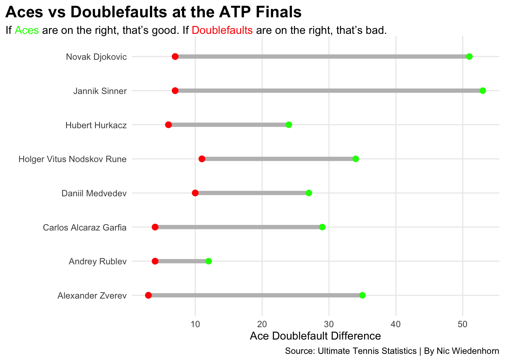

IS THE SERVICE PLACEMENT MORE IMPORTANT THAN THE SPEED ON THE ATP TOUR?
tennis
atp
data
Author
Nic Wiedenhorn
Published
November 30, 2023
Tennis is a sport where the serve is one of the biggest weapons, often even decides about the outcome of matches. In tennis the serve always starts the point and is the only shot in tennis where the opponent has no influence on and therefore very important. This analysis is going to dive into the importance of how placement and speed will influence the chance to hold serve.
One of the most important aspects of the serve is the variability. Each ace can be a game changer, but a double fault could also mean trouble. The service quality can depend on many reasons like the height, technique, racket and many more but what’s the most important on the serve?
There is a lot of strategy included which sets the tone for the service games. This analysis is going to look into the average serve speed of the first and second serve as well as the placement measured in aces and how that influences the chance to hold serve.
Let’s take a look at the average serving speed at the ATP Finals.
Code
library(tidyverse)library(patchwork)library(ggalt)library(ggtext)library(gt)library(wehoop)library(patchwork)firstservespeed <-read_csv("1ServeAveragSpeedProject.csv")secondservespeed <-read_csv("2ServeAverageSpeedProject.csv")firstservespeed <- firstservespeed |>mutate(value =gsub(" km/h", "", value, fixed =TRUE), value =as.numeric(value))secondservespeed <- secondservespeed |>mutate(value =gsub(" km/h", "", value, fixed =TRUE), value =as.numeric(value))Sinner1 <- firstservespeed |>filter(name =="Jannik Sinner") Djokovic1 <- firstservespeed |>filter(name =="Novak Djokovic")Sinner2 <- secondservespeed |>filter(name =="Jannik Sinner") Djokovic2 <- secondservespeed |>filter(name =="Novak Djokovic") bar1 <-ggplot() +geom_bar(data=firstservespeed, aes(x=reorder(name,value),weight=value),fill="grey") +geom_bar(data=Sinner1, aes(x=reorder(name,value),weight=value),fill="blue") +geom_bar(data=Djokovic1, aes(x=reorder(name,value),weight=value),fill="red") +coord_flip() +labs(x="", y="Average First Serve Speed" ) +theme_minimal()bar2 <-ggplot() +geom_bar(data=secondservespeed, aes(x=reorder(name,value),weight=value),fill="grey") +geom_bar(data=Sinner2, aes(x=reorder(name,value),weight=value),fill="blue") +geom_bar(data=Djokovic2, aes(x=reorder(name,value),weight=value),fill="red") +coord_flip() +labs(x="", y="Average Second Serve Speed") +theme_minimal() bar1 + bar2 +plot_annotation(title ="Average Serving Speed During ATP Finals",subtitle ="Average speed for first and second serve in KM/H.",caption ="Source: Ultimate Tennis Statistics | By Nic Wiedenhorn" ) &theme(plot.title =element_text(size =16, face ="bold"),axis.title =element_text(size =10), plot.subtitle =element_text(size=10), panel.grid.minor =element_blank() )

This chart shows the comparison of the average serve speed of all players for the first and second serve. That considered, let’s take a look at the two highlighted players. These two performed the best in the tournament and ended up playing in the finals against each other.
Looking at this statistic, both are in the middle or bottom part of the chart even though they played the finals against each other. Maybe there is another reason why they had better service games.
Does this mean the serve speed is necessary for a good service game?
Let’s take a look at the number of aces and doubles faults from each player.
Code
Aces <-read_csv("AcesProject.csv")doublefaults <-read_csv("DoublefaultsProject.csv")doublef <- doublefaults |>group_by(name) |>filter(value >0) |>summarise(DoubelFaults =sum(value) ) |>arrange(desc(DoubelFaults))AcesDoublefaults <- Aces |>inner_join(doublef)ggplot() +geom_dumbbell(data=AcesDoublefaults, aes(y=reorder(name, active), x=value, xend=DoubelFaults),size =2,colour ="grey",colour_x ="green",colour_xend ="red") +labs(title="Aces vs Doublefaults at the ATP Finals", subtitle ="If <span style = 'color:green;'>Aces</span> are on the right, that's good. If <span style = 'color:red;'>Doublefaults</span> are on the right, that's bad.",caption ="Source: Ultimate Tennis Statistics | By Nic Wiedenhorn", x="Ace Doublefault Difference",y="" ) +theme_minimal() +theme(plot.title =element_text(size =16, face ="bold"),axis.title =element_text(size =11), plot.subtitle =element_textbox_simple(size=11), panel.grid.minor =element_blank(),plot.title.position ="plot" )

Double faults are always part of the game but the greater the difference the better. When looking at this chart it becomes clear that the precision which can be seen as aces can have a very big impact on the service games.
This chart presented the balance between aces and double faults for each player. Without even highlighting the two players from before we can see that they stand out. Djokovic and Sinner have an average amount of double faults but when it comes to aces the are way ahead.
What conclusion can be drawn when looking at the number of aces and double faults in regards of service game holds? Let’s look which players hold their serve more than others in comparison.